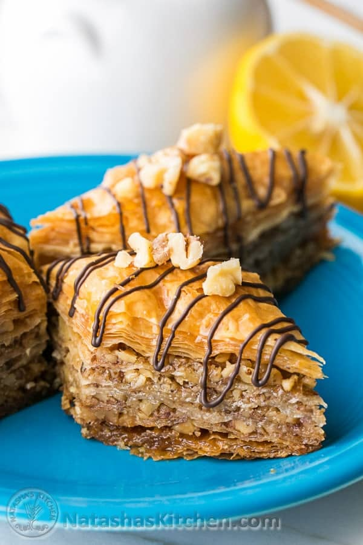

Baklava

Description
Baklava s a layered pastry dessert made of filo pastry, filled with chopped nuts, and sweetened with syrup or honey.
It was one of the most popular sweet pastries of Ottoman cuisine.
Ingredients
- 1 cup of water
- 1 cup of sugar
- 1/2 cup honey
- 2 tabelspoons lemon juice
- 1 cinammon stick
How to make BAKLAVA
- Thaw phyllo dough according to package instructions
(this is best done overnight in the fridge, then place it on the counter for 1 hour before starting your recipe to bring it to room temp).
- Trim phyllo dough to fit your baking sheet. My phyllo dough package had 2 rolls with a total of 40 sheets that measured 9×14 so I had to trim them slightly.
You can trim one stack at a time then cover with a damp towel to keep from drying out.
- Butter the bottom and sides of a 13×9 non-stick baking pan.
- Bake
- Cut